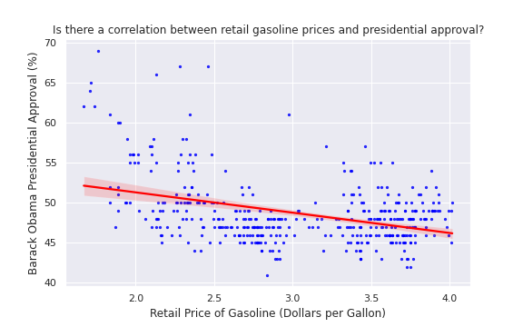
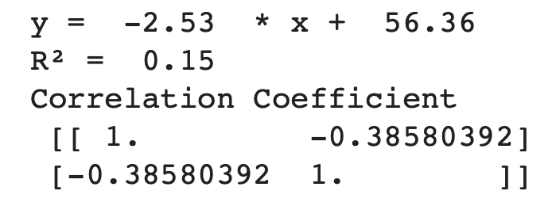
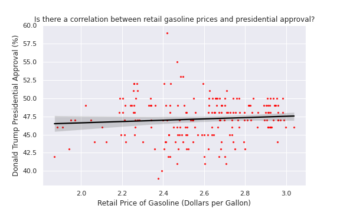
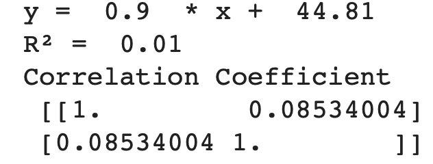

Data Science Project
Edward Natusch
University of Bristol
Project Title: Do changes in fuel prices impact political support?
Data Analysis: Obama Administration


Data Analysis: Trump Administration


Project Write Up
This project has aimed to explore the question ‘Do changes in fuel prices impact political support?’ To address this question as fully as possible, I have aimed to visualise data across countries (The United States and the United Kingdom) and in the context of the USA, across presidencies (Biden, Trump, and Obama). In the first two charts, I have chosen to visualise data on how fuel prices and support for current political administrations have changed recently, using 2021 data for the UK and USA. The following 6 charts focus on fuel price changes during the Obama and Trump administrations. Due to the greater availability of data, such as presidential approval polls available on a daily basis across 8 and 4-year tenures for Obama and Trump respectively, I have aimed to identify relationships in the data during these two presidencies. For example, producing scatter graphs between presidential approval and the retail price of gasoline in Vega-lite, using Seaborn to produce scatter plots with regression lines, and Scipy to calculate statistics, such as correlation coefficients and R-squared values. To make the data accessible, I have linked the relevant CSV files and Python notebooks below each chart.
For the US, I scraped daily historic polling values for presidential approval of the three presidents from HTML tables on the Rasmussen Reports website, using the pandas library in Python. To obtain the retail price of gasoline (collected weekly on a Monday), I downloaded the data from the FRED API in JSON format using Python. For the UK, I scraped polling data for the Conservatives from Westminster voting intention polls (published irregularly) by Savanta Comres, using the Beautiful Soup Python library. To automate this, I have written a program that scrapes the links for all the voting intention polls from the Comres website and then uses a for-loop to extract the values from each individual poll. To obtain the monthly CPIH index: liquid fuels, vehicle fuels, and lubricants data set, I used Python to download the data from the ONS API in JSON format. To make replication of all the data I have used possible, I have stored all the Python code I have written in open-access Jupiter Notebooks in my GitHub repository and placed the link to the relevant notebook below each chart.
After loading the HTML tables for presidential approval from the Rasmussen Report website using pandas into a data frame, the tables required further formatting before the data could be used for analysis. I used pandas to remove ‘%’ signs from inside the table columns, to convert polling values to a numeric format, and to reformat the dates so they were in a standard date ‘YYYY-MM-DD’ format. The process for cleaning the Savanta Comres polling data was similar but as the CPIH data was monthly, I used pandas to create monthly polling averages. For the scatter plots, I also used pandas to create a 1-month lag for the polling data. After downloading the retail gasoline price data from the FRED API, I used a for-loop to append the dates and observations into a data frame and reformatted the dates into a standard date format. I could then use pandas to merge the polling and retail price of gasoline data sets using the date column. I followed the same process for the ONS API as I did for the FRED API for loading the CPIH fuel data into a data frame and merging with the UK polling data.
For the Obama data, there was a weak negative correlation (-0.39 2DP) between presidential approval (lagged by a month) and the retail price of gasoline. The R-Squared value (0.15 2DP) suggests that about 15% of the variation in presidential approval can be explained by the variation in the retail price of gasoline. For the Trump data, there was a very weak positive correlation of (0.085 2DP) between presidential approval (lagged by a month) and the retail price of gasoline and a low R-squared value of 0.01 (2DP), suggesting that 99% of the variation in presidential approval is not explained by the model. Whilst these values do not indicate causality, I thought it was interesting that they indicated different relationships for Trump and Obama, with a much weaker positive correlation coefficient that was close to zero for Trump, suggesting it is possible there is not a relationship. Whilst I cannot conclude that there is a relationship between fuel prices and political support from these differing results, in terms of further research, I would analyse more presidencies to see if the negative relationship in the Obama data is reproducible and whether in general there is a weaker relationship for Republicans than Democrats. I would also like to obtain UK polling data for a longer time period to see if the results differ outside of the US.